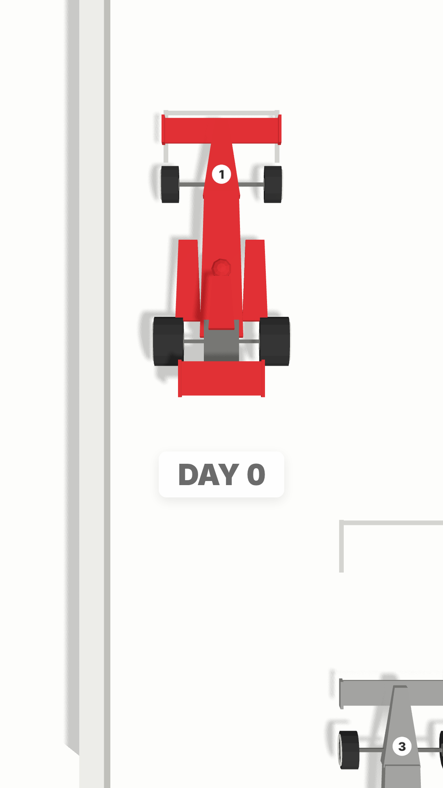
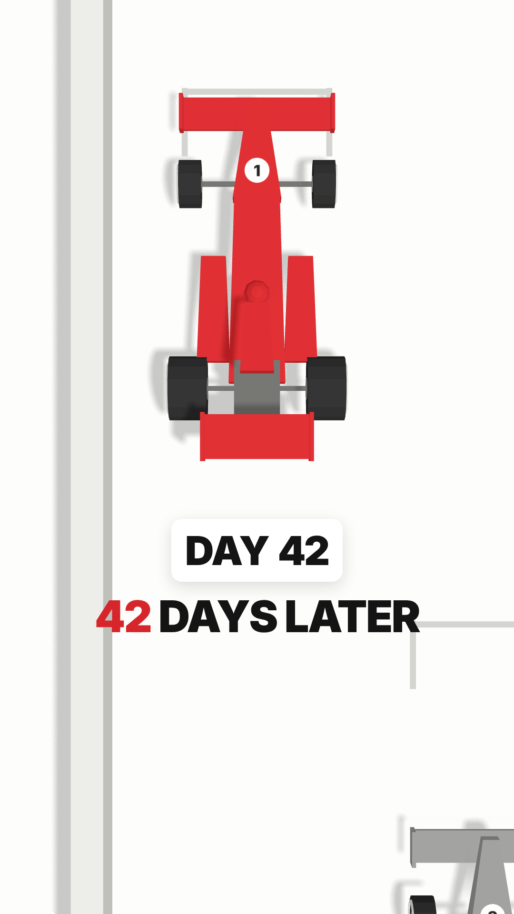
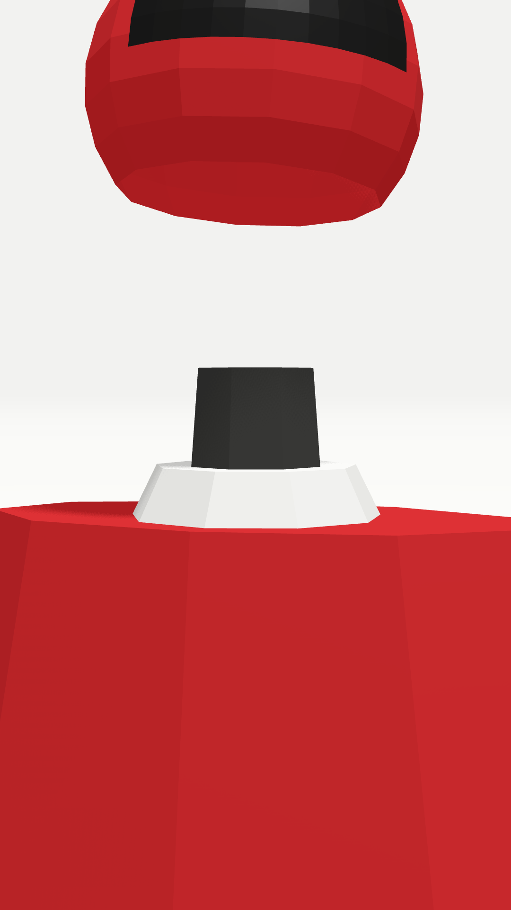
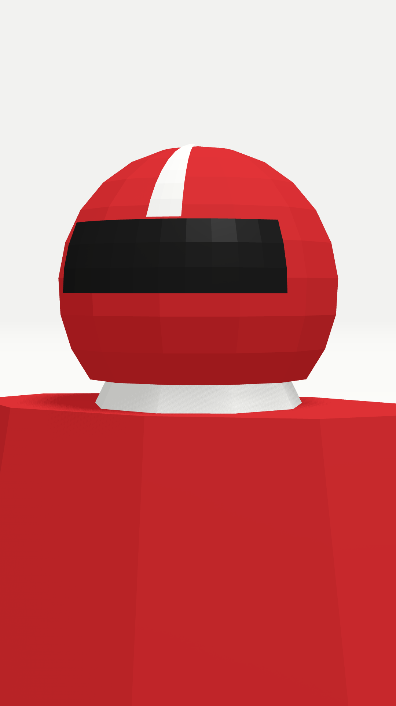
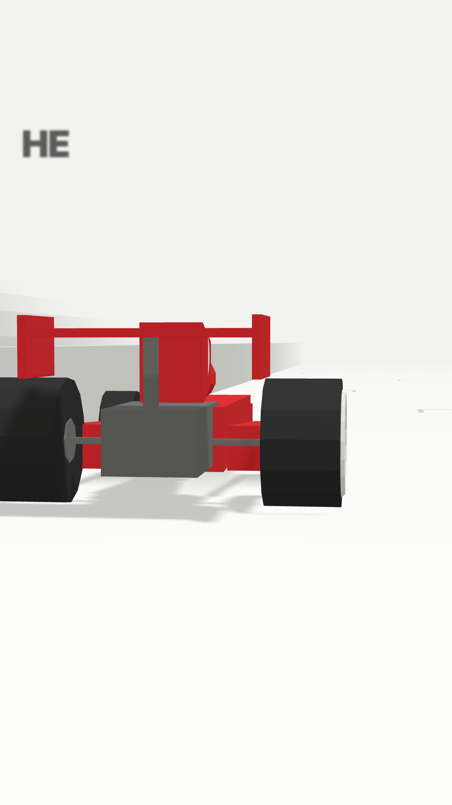
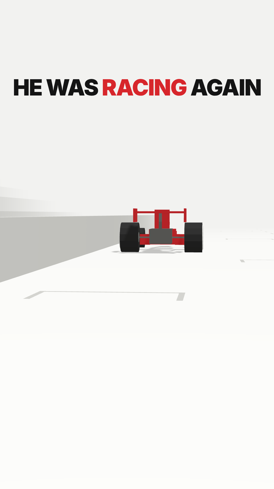

Low-poly clay style · red is the only accent · three shots, hard cuts · each card shows the shot's first and last frame


Straight overhead on Lauda's red #1 in its grid box, grey rivals ahead and behind. The camera sinks slowly. A white counter box lands and ticks DAY 0 → DAY 42, then "42 DAYS LATER" blurs in word by word.


Macro close-up. The red helmet with its white stripe and dark visor drops into frame and settles onto the driver's shoulders, turning to face camera as it lands. The camera eases in slightly. No text: let the image breathe.


Low rear three-quarter view. The car launches from rest and pulls away down the straight, wheels spinning, shrinking into empty white. "HE WAS RACING AGAIN" lands with RACING in red.